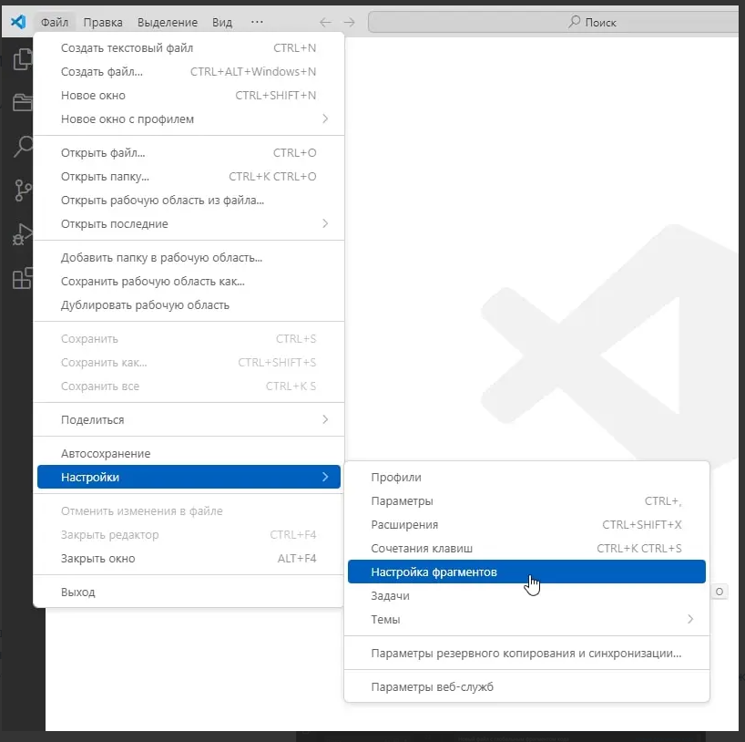
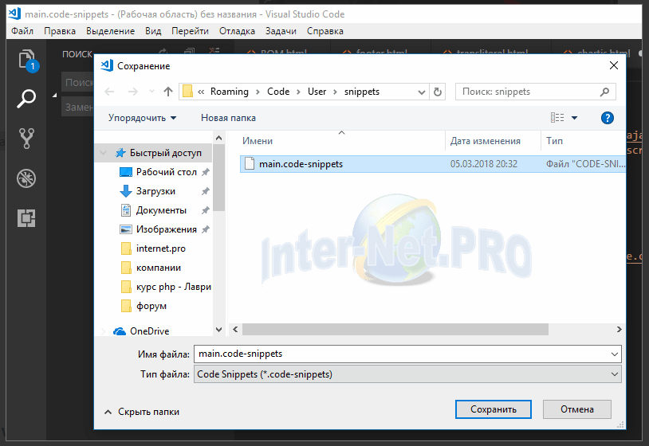
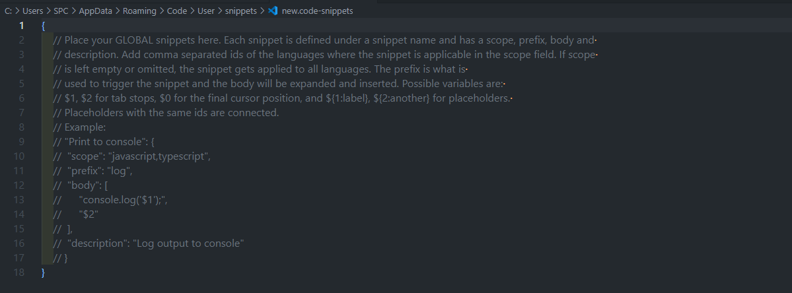
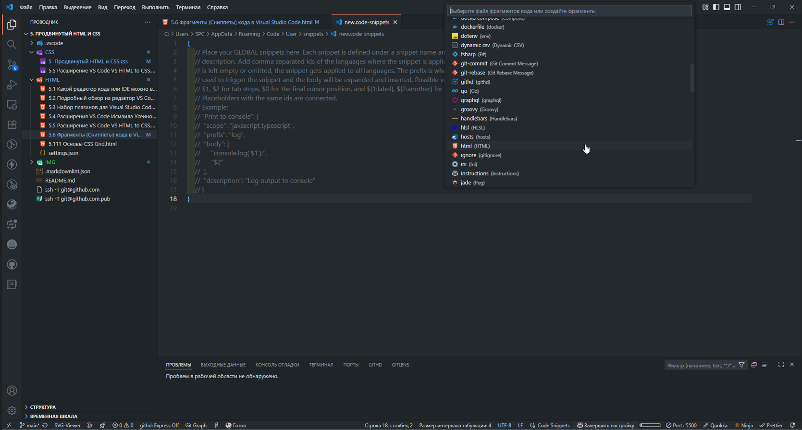

Продвинутый HTML и CSS
5.6 Фрагменты (Сниппеты) кода в Visual Studio Code.
Ускоренный курс по созданию фрагментов кода в VS Code.
Содержание
#Создание сниппета
Допустим, вы часто используете один и тот же фрагмент кода в различных проектах, но с
незначительными изменениями. В таком случае постоянное переписывание или копирование
этого кода из предыдущих проектов может быть неэффективным и
расточительным по времени.
Именно для таких случаев были разработаны сниппеты. Сниппет
представляет собой предварительно сохраненный фрагмент кода, который можно вызвать с
помощью определенного сокращения или формулы, задаваемых самим
разработчиком.
Примечательно, что в редакторе VS Code сниппеты не настраиваются по
умолчанию, а создаются разработчиком в ходе работы над проектами, что позволяет
адаптировать их под конкретные потребности и задачи.
Фрагменты кода ?
Никто бы не отказался от способности писать больше кода, нажимая при этом меньше клавиш, и
вот тут-то на горизонте появляются Code Snippets (фрагменты кода).
Напомню, что “фрагменты кода-это шаблоны, упрощающие ввод повторяющихся паттернов кода, таких как циклы или условные операторы”.На протяжении многих лет люди прибегали к использованию различных инструментов с целью оптимизации своих временных затрат, будь то стандартные функции, файловые структуры или полноценные шаблоны для систем.
В сущности, эта идея имеет давнюю историю.Однако многие из ныне существующих систем сталкиваются с одной серьёзной проблемой: они обычно хранятся в текстовых файлах или других форматах, что приводит к необходимости ручного переноса и перекодирования при их использовании.
Но проблема многих существующих систем состоит в том, что они зачастую сохранялись в текстовых файлах или других файловых системах и требовали ручного перекопирования в место использования.
VS Code Snippets-это самый мощный инструмент, существенно повышающий производительность разработки.
VS Code Snippets
В редакторе VS Code фрагменты кода появляются в IntelliSense (Ctrl + Space пробел ) совместно с другими предложениями подстановки, а также в специальном средстве выбора фрагментов (Insert Snippet в Command palette-добавить фрагмент в палитре команд).
«Insert Snippet» — это средство выбора фрагментов кода в редакторе VS Code.
Чтобы вставить фрагмент кода с помощью Insert Snippet, нужно:
- Открыть палитру команд. В зависимости от операционной системы это можно сделать по команде:
Ctrl + Shift + P для Windows
или
CMD + Shift + P для Mac.- В строке поиска ввести «insert».
- Выбрать опцию «Insert Snippet».
Они представляют собой превосходное средство для экономии времени, позволяющее вам быстро и легко вставлять часто используемые блоки кода для любого языка программирования.
Лучшее достоинство VS Code Snippets заключается в том, что вы можете легко определять свои фрагменты кода без какого-либо расширения. А теперь предлагаю рассмотреть на конкретном примере, как же это сделать.
Создание базового фрагмента кода
Процесс создания фрагментов кода в VS Code одинаков для всех языков программирования. Все
пользовательские фрагменты хранятся в файлах JSON (по одному для каждого языка).
Пользовательские фрагменты хранятся в файлах JSON (по одному для каждого языка).
Чтобы создать сниппет, нужно:
- Открыть пользовательские фрагменты — нажать
File > Preferences > User Snippets (Windows)
Файл > Настройки > Настройка фрагментов (Windows)
или
Code > Preferences > User Snippets (macOS)
Код > Настройки > Пользовательские фрагменты (macOS)
Переход к сниппетам
- Откроется окошко работы со сниппетами.
Здесь есть некоторые загруженные сниппеты и их число можно расширить с помощью загрузки дополнительных. Для создания нового сниппета кликните по ссылке “New Snippets”.
Окно управления сниппетами в VS Code
Указать язык, для которого нужно создать фрагмент.
- В результате отобразится выпадающий список доступных языков, для которых вы можете определить фрагменты кода. Если ранее вы уже добавляли пользовательские фрагменты для каких-либо языков, то они появятся в списке первыми.
- Если сниппет предназначен сразу для нескольких языков - выбираем "Новый файл с глобальным фрагментом кода".
- Если ваш сниппет будет только для одного определённого языка, то можем выбрать язык. В списке много языков и чтобы найти нужный, просто прокрутите список.
VS Code создаст файл language.json в папке C:\Users<ИмяПользователя> \AppData\Roaming\Code\User\snippets (на Windows). - Появится окошко, в котором нужно прописать наименование сниппета. В названии рекомендуется не использовать пробелы, а вместо них ставить - или _. 
-
Откроется окно, в котором вам нужно прописать сниппет.
Комментарии в файле можно
удалить.

Пример сниппета
{
// Разместите здесь свои глобальные сниппеты. Каждый сниппет имеет имя, область действия, префикс, тело и
// описание. Добавьте в поле области действия через запятую идентификаторы языков, для которых применим сниппет. Если область действия
// оставлена пустой или не указана, сниппет применяется ко всем языкам. Префикс используется для запуска сниппета, а тело будет расширено и вставлено. Возможные переменные:
// $1, $2 для табуляции, $0 для конечной позиции курсора и ${1:label}, ${2:another} для заполнителей.
// Заполнители с одинаковыми идентификаторами связаны.
// Example:
// "Print to console": {
// "scope": "javascript,typescript",
// "prefix": "log",
// "body": [
// "console.log('$1');",
// "$2"
// ],
// "description": "Вывод в консоль"
// } //}Файл для создания нового сниппета с комментариями
- Теперь рассмотрим тело сниппета:
- “Print to console” сюда прописывайте название сниппета – оно будет отображаться в подсказках в редакторе кода, когда вы начнете вводить соответствующие префиксы.
- “score” сюда прописываются языки, в которых может открываться данный сниппет. Обратите внимание, что названия языков нужно писать внутри кавычек и разделять их запятой, как показано на скриншоте.
- prefix — название для вызова сниппета с помощью tab;
- “body” сюда прописывается код самого сниппета, который будет раскрываться.
- description”“ опциональное поле. В него прописывается описание сниппета.

Структура сниппета
- Закончив написание сниппета, сохраните файл с помощью сочетания клавиш Ctrl+S. Теперь вы можете вызывать его в своих проектах с помощью сокращения, заданного в score.
#Типы сниппетов
Обратите внимание, что в VSCode есть правила для названий файлов со сниппетами.
Есть 2 типа сниппетов:
- Глобальные сниппеты — сниппеты, которые могут использоваться в любом языке.
- Сниппеты для определённого языка — сниппеты, которые могут использоваться только в определённом языке.
Для глобальных сниппетов файл должен иметь расширение .code-snippets (например:
main.code-snippets)
Для заданного языка, тип файла должен быть json, а название - идектификатор
языка <languageId> (например: javascript.json, php.json,
css.json и т.д.).
Такой подход снижает нагрузку на работу редактора.
#Настройки сниппета
Весь код с настройками пишется внутри глобальный фигурных кавычек { }
Сначала идёт имя сниппета. В примере это: jQuery, Font_Awesome_5 и Image Placeholder.
Как видно можно применять пробелы и нижние подчёркивания.
Каждый сниппет имеет ряд настроек:
- prefix - название для вызова сниппета с помощью tab.
- scope - необязательная настройка, ограничивающая видимость сниппета только для указанных в ней языков
- body - сам сниппет. Фрагмент, строка или массив строк, который будет вставлен после написания значения prefix-а и нажатия на клавиатуре кнопки ↹ Tab
- description - описание для снипета, выводимое в всплывающей подсказке из IntelliSense в редакторе.
Для сниппетов .json применяются такие же настройки кроме scope.
Если в сниппете у вас есть кавычки, то не забывайте ставить перед ними экранирование - слеш в
обратную сторону: \

Сниппеты работают сразу после сохранения и не требуют перезагрузки редактора.
<<<
#Код сниппета
Как пример, вот файл глобальной видимости main.code-snippets с тремя сниппетами:
{
"jQuery": {
"prefix": "jq",
"scope": "html, php",
"body": [
" <script
src=\"https://ajax.googleapis.com/ajax/libs/jquery/3.2.1/jquery.min.js\"></script>",
" <script>window.jQuery || document.write('<script
src=\"js/jquery-3.2.1.min.js\"><\/script>')</script>",
],
"description": "Подключение jQuery"
},
"Font_Awesome_5": {
"prefix": "fafa",
"scope": "html, php",
"body": [
"
<script defer
src=\"https://use.fontawesome.com/releases/v5.0.8/js/all.js\"></script>",
],
"description": "Подключение FontAwesome 5"
},
"Image Placholder": {
"prefix": "imgpl",
"body": [
"<img src=\"https://placehold.it/${2:250x200}${3:?text=Картинка}\"
alt=\"$1\">",
],
"description": "Картинка заполнитель"
},
}
Предыдущий пример иллюстрирует создание многострочного снипета. Если было достаточно одной строчки кода, то наш сниппет выгядит так:
{
"@media": {
"prefix": "@media",
"scope": "css",
"body": "@media only screen and (max-width: 768px) {$1}",
"description": "Вставить медиа запрос"
}
}
#Установка курсора и заполнитель
В сниппетах можно указывать место для установки курсора после развёртывания сниппета и
переход курсора при нажатии таб.
В указанном выше примере со сниппетами, в сниппете Image Placeholder настройка body
имеет следующий фрагмент:
alt=\"$1\">",
Знаком $ указывается место куда будет устанавлен курсор, цифрами - порядок перехода курсора
при нажатии таба.
Если задать несколько, например $2, то курсор будет установлен в этих местах, а
редактирование кода будет синхронным.
Можно курсор устанавливать с заполнителем. Тогда курсор будет установлен, а заполнитель
выделен для редактирования.
Например конструкция ${2:250х200} где 2 - это порядок перехода курсора после которого
через двоеточие идёт заполнитель.
Так же можно ипользовать конструкцию с выбором заполнителя: ${1|one,two,three|}. Когда
фрагмент вставлен и выбран
заполнитель, выбор предложит пользователю выбрать одно из значений.
#Примеры
Наверное все знают, что если в файле с расширением .html набрать восклицательный
знак и
нажать клавишу ↹ Tab , то Emmet который встроен по умолчанию в редактор
VSCode развернёт начальную html-разметку.
Мне вот не нравится, что по умолчанию он прописывает
после чего у меня браузер гугл-хром пытается постоянно перевести страницу на русский язык. Приходилось редактировать на
Поэтому я переделал свой сниппет, чтобы развёртывал начальную разметку HTML так как мне
нужно.
Так как данный сниппет только для html-файлов, то чтобы не было лишних нагрузок, сниппет
прописывается в файле
html.json. На втором скрине в статье - прокрутить вниз и выбрать HTML, редактор VSCode
сам создаст и откроет этот файл.

Удаляем всё что есть в этом файле (если правильно помню там закомментированая инструкция
по созданию сниппетов) и
вставляем такой код:
"HTML на русском": {
"prefix": "!!",
"body": [
" ",
"<html lang=\"ru\">",
"<head>",
" <meta charset=\"UTF-8\">",
" <meta name=\"viewport\" content=\"width=device-width, initial-scale=1.0\">",
"<meta http-equiv=\"X-UA-Compatible\" content=\"ie=edge\">",
" <title>${1:Заголовок}</title>",
"</head>",
"<body>",
" $2",
" ",
"</body>",
"</html>"
],
"description": "Начальная HTML-разметка на русском"
}
}
Не забудьте после вставки сохранить.
После сниппета с начальной загрузкой HTML на русском, вы можете задать разумный вопрос: "А
где в сниппете Meta Keywords
и Meta Description?"
Я их не стал вносить в начальную HTML-разметку, т.к. эти теги нужны для тех страниц
которые выкладываются в интернет, а
то что пишется в редакторе часто используется как тестовая площадка и не всегда попадает
в интернет.
В упомянутом в предыдущем комментарии файле html.json я отдельно прописываю сниппеты для
Meta Keywords и Meta
Description.
Вот такой код для этих двух сниппетов:
"prefix": "meta-d",
"body": "
<meta name=\"description\" content=\"$1\" />",
"description": "Описание страницы - Meta Description"
},
"meta-keywords": {
"prefix": "meta-k",
"body": "
<meta name=\"keywords\" content=\"$1\" />",
"description": "Ключевые слова"
}
Теперь чтобы вывести
- тег Meta Description - набираем meta-d и жмём клавишу ↹ Tab
- тег Meta Keywords - набираем meta-k и жмём клавишу ↹ Tab
Запоминать префиксы этих сниппетов хоть и не сложно, но необязательно. Достаточно начать набирать meta и редактор сам предложит варианты в всплывающей подсказке:
 <<<
<<<